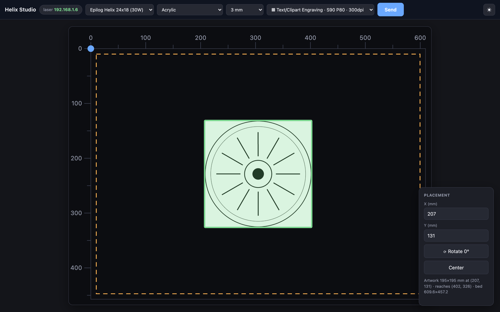
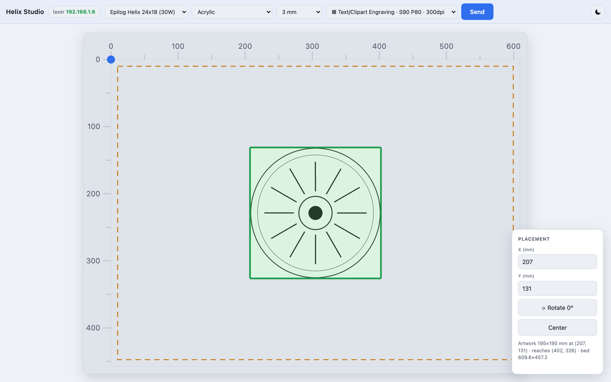

Open source · MIT
Send a PDF to your Epilog laser
from any browser.
Helix Studio is a small web app that runs on your own machine. Drop in a PDF, place it on a true-to-scale picture of the bed, pick a material preset, and the job goes straight to an Epilog Helix or Mini over the network — no VisiCut, no Windows-only print driver, no CUPS queue.
- 1 · ImportDrop in a PDF. It's cropped to its ink.
- 2 · PlaceDrag it on the bed, or type X/Y in mm.
- 3 · ChooseMaterial, thickness, engrave or cut preset.
- 4 · SendThe job queues. You press GO on the machine.


The problem
Getting a drawing onto a laser cutter is the hard part
The machine itself is willing. Everything between your design and the bed is what gets in the way.
The usual path
- A Windows-only print driver. The supported workflow runs through Epilog's driver and dashboard, so the lab keeps one ageing Windows box alive purely to talk to the laser.
- Or a chain of workarounds. VisiCut, a CUPS queue, an export-to-SVG-then-fix-it dance — each with its own version drift.
- Settings live on a taped-up datasheet. Speed, power, frequency and DPI get retyped from a PDF, or guessed.
- Nothing checks the geometry. Send a job placed off the bed and the head drives into the rail. You find out by listening.
What that costs you
- A queue at one computer. One driver machine is a bottleneck in a shared workshop.
- Mac and Linux users are stuck exporting files and walking them over.
- Wasted material. Wrong power on the wrong acrylic is a ruined sheet and a re-cut.
- Jobs you can't reproduce. "What settings did we use last time?" has no answer.
The solution
Talk to the laser directly, from a page you already have open
An Epilog on the network already speaks a printing protocol. Helix Studio builds the job itself and sends it over that protocol, so nothing else has to be installed between you and the machine.
No driver, no queue
A Python server on your own computer builds the raster and vector job and hands it to the laser over LPD on port 515. Nothing else in the chain.
Any operating system
The interface is a browser page, so macOS, Windows and Linux all work the same way. Nothing to code-sign, nothing to keep updated.
Placement you can see
A scale drawing of the bed with millimetre rulers. Drag the artwork or type coordinates; it's cropped to its ink, so page margins don't shift it.
A boundary the software enforces
You calibrate the bed once. Artwork that crosses the safety margin turns red, Send goes dead, and the server refuses the job even over the API.
The datasheet, built in
Epilog's published settings for a 30 W tube ship as presets, per material. Pick a thickness and the cuts that can't get through it are hidden.
Stays on your machine
The server binds to localhost and the only outbound connection is to the laser on your own network. No account, no upload, no cloud.
How it works
From PDF to laser job
Poppler renders the page; the artwork becomes a 1-bit raster for engraving or flattened vector paths for cutting; the driver assembles PJL/PCL and HP-GL and streams it to the machine.
PDF ──pdftocairo──► preview + raster ──┬──► engrave: 1-bit mask (PackBits) └──► cut: vector paths flattened to mm │ ▼ PJL / PCL + HP-GL over LPD:515
Engrave
The page is rasterised at the preset's DPI, cropped to the ink, and sent as a PackBits-compressed bitmap.
Cut
Vector paths are extracted and flattened to millimetres. Each cut gets a small overcut, so the laser's start-of-vector firing lag doesn't leave the first edge attached.
Both on one piece
Send the engrave, switch the preset, send the cut. Both jobs are placed from the same origin, so they line up on the material.
Get started
Running in about five minutes
-
Install Poppler
It renders the PDF. This is the only dependency that isn't Python.
# macOS brew install poppler # Windows (then reopen the terminal) winget install --id oschwartz10612.Poppler # Debian / Ubuntu sudo apt install poppler-utils
-
Get Helix Studio
git clone https://github.com/bsc2fast/helix-studio.git cd helix-studio python3 -m venv .venv && source .venv/bin/activate python3 -m pip install -r requirements.txt
-
Point it at your machine
Copy
config.example.jsontoconfig.jsonand set your laser's IP address and your own bed measurements. The shipped calibration describes one specific machine — it is not yours. -
Run it
python3 server.py # then open http://localhost:4060
What you need
| Requirement | Notes |
|---|---|
| Epilog Helix or Mini | On your network, reachable on TCP port 515. Its IP is on the machine's own control panel. |
| Python 3.9+ | Plus Pillow, installed with pip. |
| Poppler | The pdfinfo and pdftocairo command-line tools. |
| A browser | Any modern one. The UI has no build step and no dependencies. |
⚠ About running a laser
A laser cutter is a fire hazard and a machine that can hurt you. Never run a job unattended, keep the lid closed and extraction on.
The material presets are Epilog's published starting points for a 30 W tube — your machine's real power, optics and material differ, so test on scrap first. The bed calibration that ships with the code belongs to one specific machine; measure your own before the first send. The software refuses out-of-bounds jobs, but that guard is only as good as the numbers you give it.
Helix Studio is provided as-is, with no warranty. You are responsible for what your laser does.